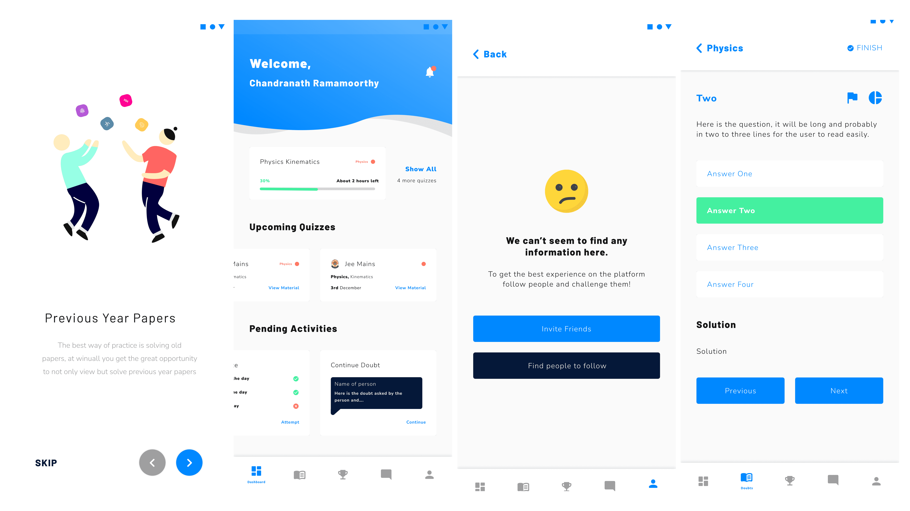
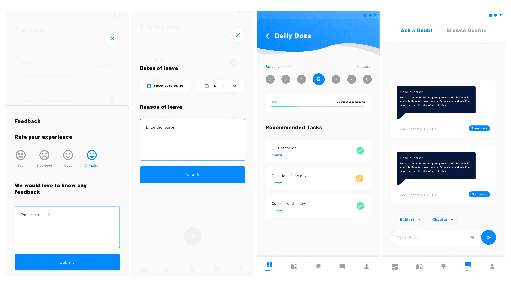

Winuall
Moving paper-based education online

Not everyone like's to read to much nowadays (thanks TikTok). See a comic strip?
Comic Strip ↓
Not everyone like's to read to much nowadays (thanks TikTok). See a comic strip or 30 second video to understand this project?
The Problem
COVID broke Indian education overnight. A huge amount of teaching; especially outside major cities ran on paper. Notebooks, printed papers, physical submissions. When classrooms closed, that had nowhere to go.
Winuall was the bridge: get paper-based coaching institutes online without assuming anyone involved was comfortable with digital anything. We worked with institutes each serving thousands of students, all of them rooted in decades of traditional methods.
My Role
Solo Designer
Design system, landing page, web portal, student mobile app, admin mobile app, illustrations, icons, tutorials.
The decision
The interesting problem: the same system had to serve teenagers and their teachers, and those two groups want opposite things. Students disengage from anything institutional. Teachers distrust anything that feels like a toy. Most people would split it ; two systems, two languages. I kept one and made it flex: type leaning playful, colour staying clean and formal. Vibrancy where engagement mattered, restraint where credibility did.
What I built
User Based Design System
Light mode by default for students, dark mode by default for teachers. Not aesthetic; scheduling. Students use this during the day, in class, and a dark interface in daylight pushed them toward drowsy. Teachers use it at night, after they've finished teaching, when a bright screen is punishing. Both could switch. Most didn't need to.
Guidance Layer
Tutorials as a layer inside the product, not a one-time onboarding tour. These users were moving from notebooks to software with no prior mental model. A skippable intro would have been useless. Guidance had to live where people actually got stuc; and we iterated on it with institute administrators until it clicked.
Customizability
Every institute had its own way of doing things and change wasn't their strong suit. Most of the portal could be reshaped to match.
Colour-coded actions in the admin app, so similar tasks couldn't be confused mid-tap.
Feedback in UX
We found this audience loved double-checking their work. Popups and notifications throughout, confirming what had just happened.




The result
The product suite supported by the adapative design system was shipped out for 3 major education institutes helping cover 12,000 local students and having a reach of 500,000+ user base projected in the next ten years,
I built four products and one design system as one person, and the system carried it. But I'd document the customisation rules far more tightly now; I made it flexible without defining where flexibility stops, which is how design systems quietly become suggestions.